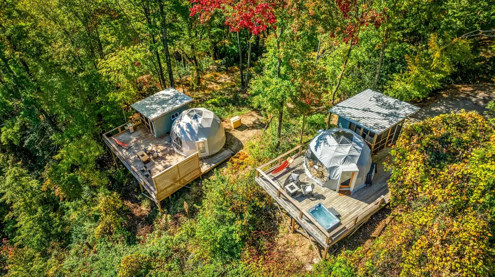
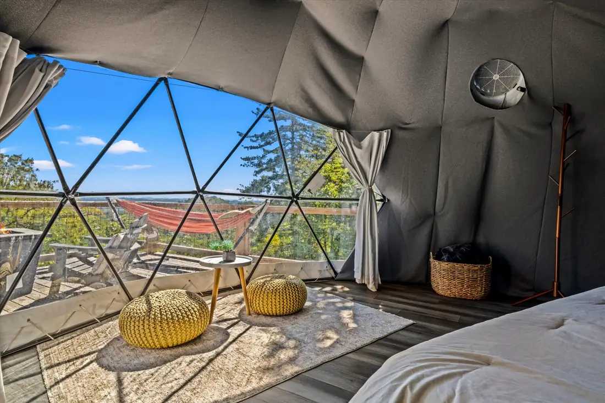

Home › Services › Domes & Specialty Structures
Geodesic Dome & Specialty Structure Builders in the NC High Country
High Country Home Pros sources, engineers, and builds geodesic domes and glamping structures on mountain terrain around Boone, Blowing Rock, and Banner Elk — and we build and run our own, so every dome we put up benefits from an operator's experience.
From bare slope to bookable stay
A dome build in the mountains is really three builds: an engineered platform that handles the slope, the structure itself, and the outdoor living that makes it worth booking — deck, stairs, hot tub, privacy screening. Most contractors can do one of those. We do all of them with one crew, because we've done them for ourselves.


Sourcing and structure
We help you choose and source the right dome or fabric-covered structure for your site, budget, and use — then handle delivery logistics, platform construction, assembly, anchoring for mountain wind and snow, insulation, and interior fit-out.
Built by operators, not just builders
Our own dome rentals in the Blowing Rock area teach us what guests love and what survives them. That experience flows into every client build: where the hot tub goes for the view, how the privacy screens angle, which finishes shrug off heavy guest turnover.
- Site evaluation and platform engineering for steep lots
- Dome sourcing, delivery, and full assembly
- Decks, stairs, hot tubs, and louvered privacy enclosures
- Guest-ready interior fit-out
Dome questions, answered
Do you build geodesic domes in the Boone and Blowing Rock area?
Yes — we source, engineer, and build domes and other fabric-covered glamping structures across the NC High Country, and we operate our own, so we build from experience.
Can a dome be built on a steep mountain lot?
Steep terrain is our home field. We build elevated platform decks engineered for the slope, then assemble the dome on top — several of ours sit over steep wooded hillsides.
Do domes work as short-term rentals here?
They're among the most-booked unique stays in the mountains. As operators ourselves, we can advise on what actually drives revenue — placement, privacy, views, and durable finishes.
Can you add a hot tub and deck to a dome site?
Yes — decks, hot tubs, privacy enclosures, and stairs are all part of a complete dome site build, handled by our own crew.